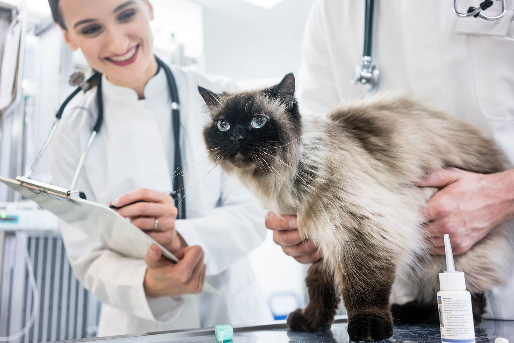
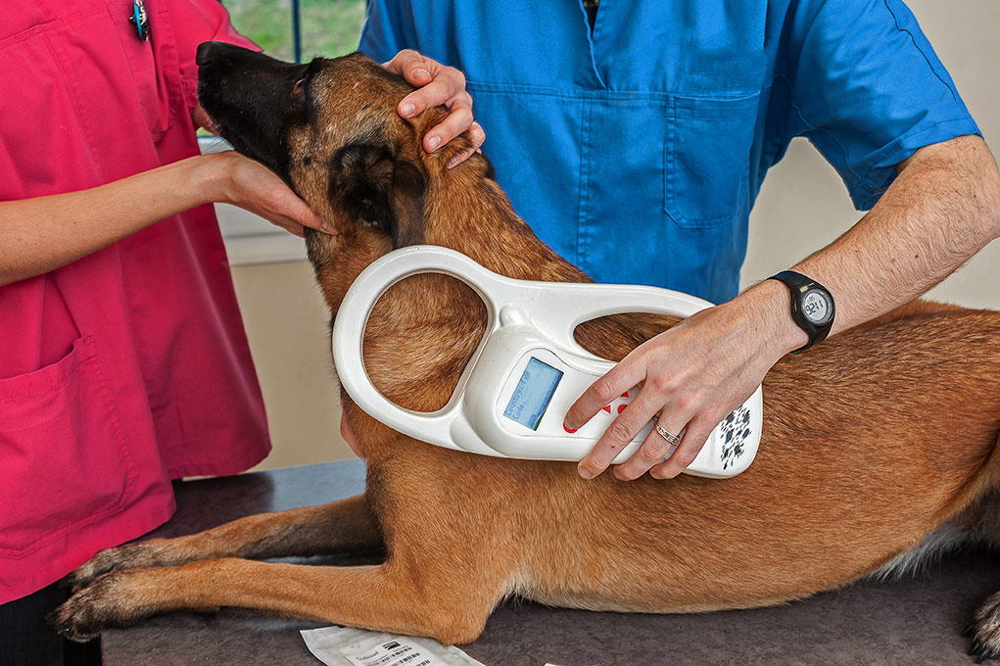
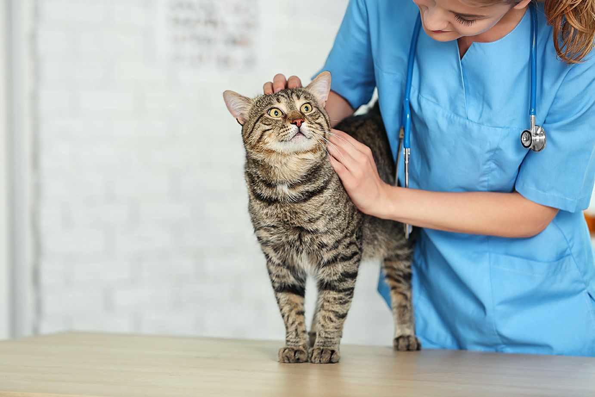
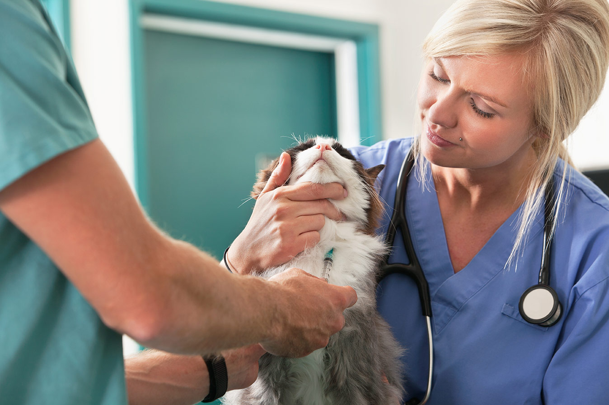
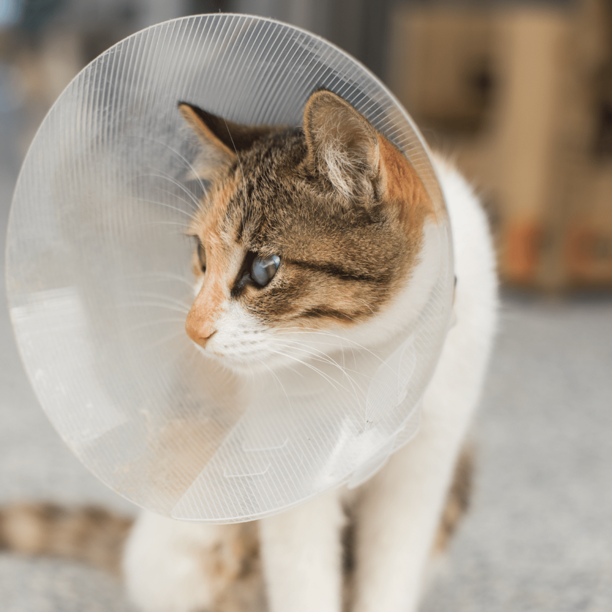

From annual wellness exams to advanced surgery and diagnostics, Longmeadow Animal Hospital offers a full spectrum of veterinary services under one roof in Hagerstown, MD.
Book an Appointment
Annual dental exams and cleanings are recommended to protect your pet from many health problems and help them maintain a healthy and clean mouth. Studies show 50% of dogs and cats have some form of periodontal disease — rising to 80% in pets 3 years or older. Our comprehensive approach includes dental health assessment, treatment, and prevention, with cleanings under anesthesia and full-mouth radiographs.

Annual wellness exams evaluate your pet's overall health, detect problems before they become serious, and keep them on track to live a long, healthy life.
Proper vaccination is vital in protecting pets against harmful diseases like Parvovirus, Distemper, Lyme Disease, Panleukopenia, Feline Leukemia Virus, and Rabies. Vaccinations generally begin at 6–8 weeks of age, and our doctors determine the appropriate plan for your pet.
Proper diet and nutrition can help your pet fight against disease, maintain a proper weight, and promote the overall well-being of your pet.

Parasites such as fleas and ticks can be very damaging to your pet's health. Preventive measures should be taken year-round to inhibit potential outbreaks.

Microchip identification is the most reliable way to reunite lost pets with their owners.

An ultrasound is a highly useful tool when evaluating heart conditions, internal organs, cysts and tumors.

We're equipped to perform routine radiography services to identify many types of illness or injury when pets are sick or suffer a trauma.

Diagnostic testing can identify problems your pet may be experiencing so that proper treatment can begin before a condition worsens.

Spaying or neutering helps pets live longer, healthier lives, minimizes behavior problems, and helps control the population of unwanted dogs and cats. We generally recommend small dogs and cats between 4–6 months of age, and large breed dogs at 6–12 months.

We perform soft tissue surgery for a number of medical reasons. This common surgery can be used for most anything non-joint or bone related.
Orthopedic surgery can help pets who suffer from joint problems, torn ligaments, broken bones, and even help correct congenital problems.
Laser therapy is a surgery-free, drug-free, noninvasive treatment to reduce pain, inflammation, and speed healing. Laser surgery destroys abnormal tissue while preserving normal tissue, allowing gentle healing with little or no scarring.
Traveling within the USA? As a federally accredited veterinarian practice, we can issue travel certificates for your healthy pet so they can travel with you.
Euthanizing a pet is not an easy decision. We are here to discuss options and assist in every way we can during this difficult time, and cremation can be a lovely way to honor and celebrate their lives.
Our team is happy to walk you through any procedure, estimate, or plan.